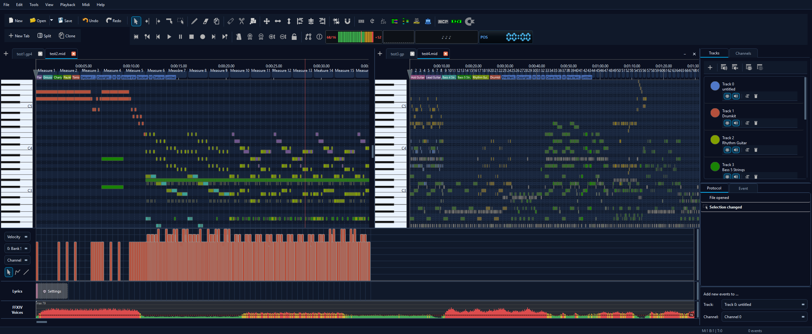
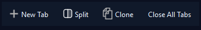

Tabs & Editor Groups
You can keep several MIDI files open at once as tabs and view two of them side by side in independent editor groups. Each group has its own tab bar, its own set of open documents and its own fully-editable note view.

Working with tabs
File → New and File → Open now open each document in its own tab instead of replacing the current one. The tab bar sits directly above the timeline.
- Switch documents by clicking a tab.
- Close a tab with its ✕ button. If the document has unsaved changes you are asked to save first.
- Reorder tabs by dragging them along the bar.
- New tab with the + button at the left of the bar.
When you quit, all unsaved tabs (in both groups) are listed for saving — nothing is discarded silently.
The tab tools
In the default two-row toolbar a small tab-tools row appears under the standard New / Open / Save / Undo / Redo buttons:

| New Tab | Opens a new, empty document in a tab in the focused group. |
| Split | Creates the second editor group (and toggles it — see below). |
| Clone | Duplicates the current document into a new, unsaved “<name> (copy)” tab so you can experiment without touching the original. |
Splitting into two editor groups
Press Split (or View → Split View) to open a second group beside the first. The selected tab moves over into the new group, and both groups become independent, fully editable panes. The focused pane is the one you last clicked: the side panels, tools, selection, zoom and the playback cursor all follow it.

Moving tabs between groups
Drag a tab from one group's bar onto the other group to move the document across. A blue insertion caret shows where the tab will land. Dropping a tab anywhere inside a group's editor area also moves it into that group.

Collapsing, restoring and closing the second group
The second group's tab bar carries two extra controls on the right:
- – (collapse) hides the group but keeps its tabs. A colour-highlighted “Group 2 (N)” chip then appears at the right of the primary tab bar — click it (or Split again) to bring the group back at its previous width.
- ✕ (close) closes the group and all its tabs, asking to save any unsaved documents first.

The chip uses the colours of the active theme, so it fits light, dark and accent themes alike.
Dropping files into a pane
Drag a MIDI file from your file manager onto a specific pane to open it there. While you drag, the target group is outlined so you can see where the file will open.
Your session is remembered
When you restart MidiEditor AI — including the restart that applies a theme change or an update — your open tabs, the split layout and the active tab are restored. Unsaved documents are offered for saving when you close or restart.